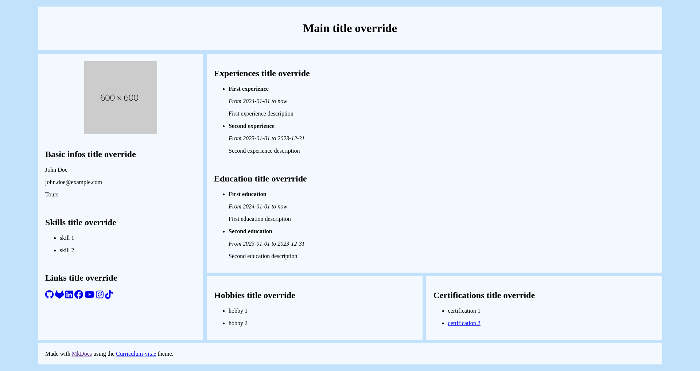
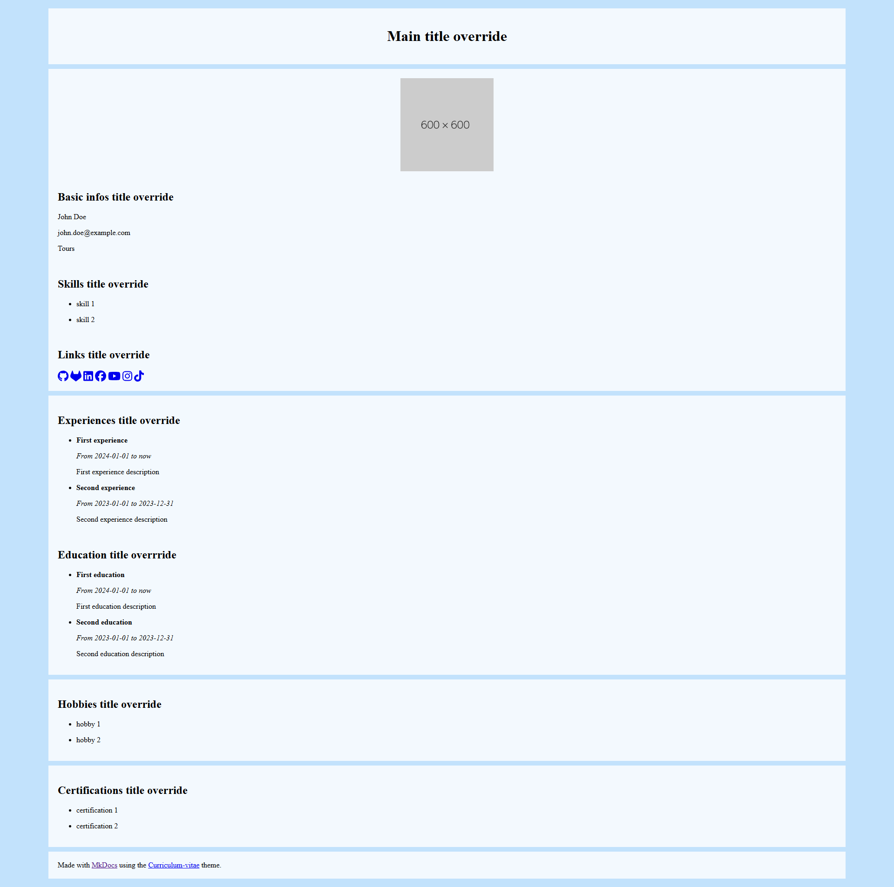
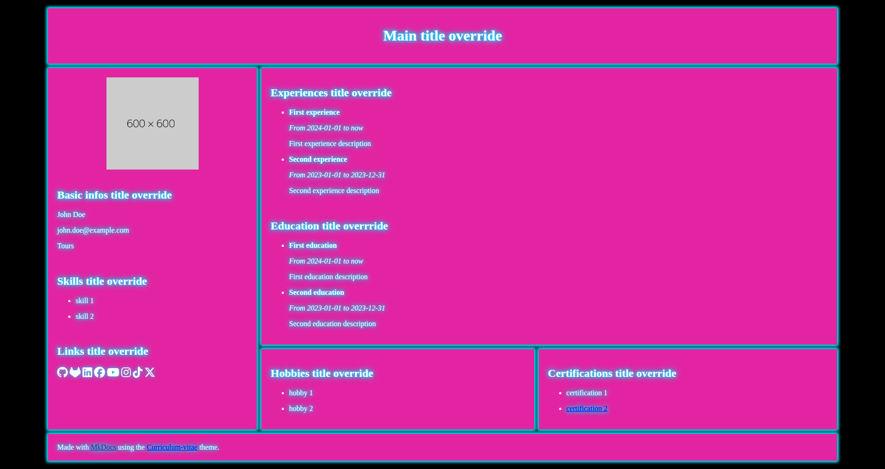
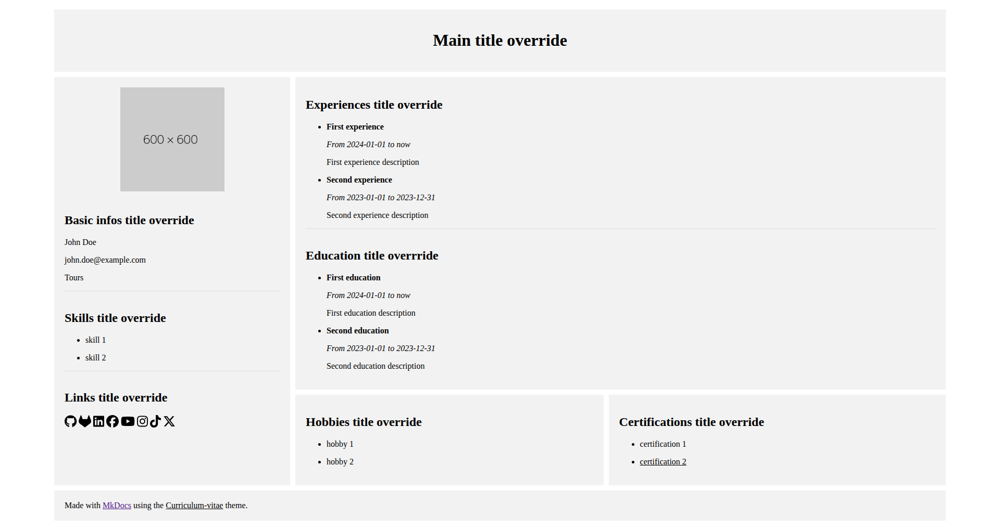

How to use it
In you mkdocs.yml file, put the curriculum-vitae theme :
theme:
name: curriculum-vitae
Next, you just have to create a docs folder in your repo, and only put an empty index.md.
Configuration
What you have to do is play with the theme variables :
Layouts
Choosing a layout is optional, without the variable, the default layout will be applied to your CV.
To select one, you just have to define the mkcv_layout variable :
# mkdocs.yml
theme:
name: curriculum-vitae
mkcv_layout: default
Multiple themes are available, that affects CSS :
- default 
- vertical 
Theming
Choosing a theme is optional, without the variable, the default theme will be applied to your CV.
To select one, you just have to define the mkcv_theme variable :
# mkdocs.yml
theme:
name: curriculum-vitae
mkcv_theme: default
Multiple themes are available, that affects CSS :
- default
- neon 
- nes

- minimalist 
Basic informations
firstnamelastnamemaillocation
Example :
firstname: John
lastname: Doe
mail: john.doe@example.com
location: Tours
Profile picture
profile_picture
Example :
profile_picture: https://dummyimage.com/600x600/
Experiences
experiences
Each experience has a title, and a description. You can also add a start_date and end_date.
You can set start_date without end_date, this will put "now" instead.
Example :
experiences:
- title: First experience
description: First experience description
start_date: 2024-01-01
- title: Second experience
description: Second experience description
start_date: 2023-01-01
end_date: 2023-12-31
Education
educations
Each education has a title, and a description. You can also add a start_date and end_date.
You can set start_date without end_date, this will put "now" instead.
educations:
- title: First education
description: First education description
start_date: 2024-01-01
- title: Second education
description: Second education description
start_date: 2023-01-01
end_date: 2023-12-31
Skills
skills
skills:
- skill 1
- skill 2
Hobbies
hobbies
hobbies:
- hobby 1
- hobby 2
Certifications
certifications
Each certification must have a name, and optionnaly you can specify a link if you want to.
certifications:
- name: certification 1
- name: certification 2
link: htttps://exemple.com
Personnal links
You can add links to your CV, those variables are optionnal. The link will appear only if the associated variable is defined.
personnal_links:
github: https://example.com/
gitlab: https://example.com/
linkedin: https://example.com/
facebook: https://example.com/
youtube: https://example.com/
Instagram: https://example.com/
tiktok: https://example.com/
x: https://example.com/
Titles override
You can override titles with ease with those variables. You don't need to define them, as they have default values.
main_title: Main title override
basic_informations_section_title: Basic infos title override
personnal_links_section_title: Links title override
experiences_section_title: Experiences title override
education_section_title: Education title overrride
skills_section_title: Skills title override
hobbies_section_title: Hobbies title override
Full Example
# mkdocs.yml
theme:
name: curriculum-vitae
mkcv_layout: default
mkcv_theme: default
firstname: John
lastname: Doe
mail: john.doe@example.com
location: Tours
profile_picture: https://dummyimage.com/600x600/
main_title: Main title override
basic_informations_section_title: Basic infos title override
skills_section_title: Skills title override
personnal_links_section_title: Links title override
experiences_section_title: Experiences title override
education_section_title: Education title overrride
hobbies_section_title: Hobbies title override
certifications_section_title: Certifications title override
skills:
- skill 1
- skill 2
hobbies:
- hobby 1
- hobby 2
certifications:
- name: certification 1
- name: certification 2
link: htttps://exemple.com
personnal_links:
github: https://example.com/
gitlab: https://example.com/
linkedin: https://example.com/
facebook: https://example.com/
youtube: https://example.com/
Instagram: https://example.com/
tiktok: https://example.com/
x: https://example.com/
experiences:
- title: First experience
description: First experience description
start_date: 2024-01-01
- title: Second experience
description: Second experience description
start_date: 2023-01-01
end_date: 2023-12-31
educations:
- title: First education
description: First education description
start_date: 2024-01-01
- title: Second education
description: Second education description
start_date: 2023-01-01
end_date: 2023-12-31